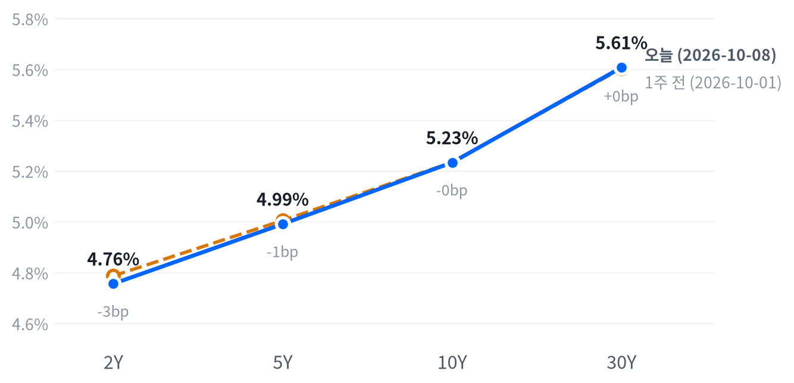

목요일 뉴욕 증시는 OpenAI의 매출 보도가 AI 공급망을 한꺼번에 끌어내린 하루였다. 국채금리가 내리고 유가가 뛰는 사이 돈은 에너지·필수소비재·가치주로 옮겨 갔고 다우는 소폭 올랐다.
할인율이 낮아진 날 AI주가 무너진 만큼 반도체·AI 하드웨어 후보의 가격 근거는 약해졌다고 본다. 수요 기대가 꺾였는지 무거운 포지션이 풀렸는지는 10월 15일 TSMC 실적에서 가린다.
AI 공급망이 하루를 지배했다. CNBC는 OpenAI가 9월 말 연환산 매출을 약 500억 달러로 투자자에게 알렸다고 확인했다. 지난달 널리 인용된 680억 달러에는 파트너 매출이 섞여 있었다는 관계자 설명도 함께 전했다. 보도가 나온 뒤 오라클·브로드컴·인텔이 크게 밀렸고, 광학 부품과 메모리 같은 2차 공급망까지 같이 내렸다. 같은 날 국채금리는 오히려 내렸다.
금리가 내린 날 장기 성장주가 무너졌으니 할인율보다 AI 최종 수요가 자본지출을 얼마나 오래 떠받칠지에 대한 기대가 낮아졌다고 판단한다. 낙폭이 OpenAI와 직접 거래하는 종목보다 주문 가시성이 먼 광학에서 더 컸다는 점이 이 판단을 받친다(코히런트 -9.63%). 시장이 앞선 매출 보도치를 주가에 얼마나 담고 있었는지는 잴 수단이 없어 기대와 실제의 차이는 크기를 말할 수 없다. 금리 고점권과 유가, 연준의 인상 신호로 이미 무거웠던 포지션이 이 보도를 계기로 풀렸을 뿐이라는 대안도 남는다. 장 전에 광학주 약세를 금리·유가 부담으로 설명한 보도가 그쪽 근거다.
반도체·AI 하드웨어 후보의 가격 근거는 오늘 약해졌고, 에너지와 필수소비재 후보는 강해졌다고 본다. 반도체 테마를 접을 단계는 아니다. 원인이 수요 기대라면 3개월 시계 전체가 흔들리고, 포지션 정리라면 낙폭이 실적 시즌에 메워질 수 있어 판단이 정반대로 갈린다. 그래서 10월 15일 TSMC 실적까지는 새 아이디어 없이 관찰한다. 비교 틀이 필요하면 반도체 ETF와 가치·에너지의 상대 강도를 보는 편이 OpenAI 고유 위험이 큰 오라클·코어위브 단일 종목보다 이 질문에 맞는다. 독자의 보유와 거래 비용은 알 수 없어 이는 관찰 틀로만 둔다.
10월 15일 02:00(ET) TSMC 3분기 실적이 강한데도 엔비디아·브로드컴·코히런트가 그날 종가로 오늘 낙폭을 되찾지 못하면 수요 기대 하향이라는 판단을 굳힌다. 셋이 함께 뚜렷이 반등하면 포지션 정리였다고 고쳐 본다. TSMC가 가이던스를 밑돌거나 같은 날 10년물 금리가 크게 움직이면 두 설명을 가르지 못한다. 그 앞에서 10월 9일 종가와 10월 14일 08:30(ET) 9월 CPI가 금리 쪽 판단을 먼저 시험한다.
| 지수 | 종가 | 등락률 | 기준일 |
|---|---|---|---|
| 닛케이225 | 70,035.71 | -0.92% | 10월 7일 |
| 항셍 | 24,130.50 | -0.62% | 10월 7일 |
| 상해종합 | 3,842.20 | +0.31% | 9월 30일 |
| DAX | 25,104.36 | -1.35% | 10월 7일 |
| FTSE100 | 10,458.50 | -0.79% | 10월 7일 |
| 유로스톡스50 | 6,180.29 | -1.47% | 10월 7일 |
| VIX | 15.41 | +2.19% | 10월 8일 |
아시아·유럽 지수는 확보된 가장 최근 마감 기준이다. 상해종합은 9월 30일, 나머지는 10월 7일 수요일 마감이다.
아시아와 유럽의 약세를 미국이 이어받았다. 10월 7일 마감에서 유럽은 유로스톡스50이 1.47%, DAX가 1.35% 내리는 등 세 지수가 모두 내렸다. 아시아는 닛케이가 0.92%, 항셍이 0.62% 내렸지만 9월 30일 마감이 최신인 상해종합은 올라 지역 안에서도 갈렸다. VIX는 15.41로 조금 올랐을 뿐이고 지난 두 해 가운데 낮은 쪽 20% 안에 머물렀다.
야간 선물은 전날 저녁 고점에서 새벽까지 밀렸다. S&P 선물(ES)은 전날 19:30(ET) 7,858에서 고점을 찍은 뒤 06:30 7,803까지 내렸고, 나스닥100 선물(NQ)도 같은 시각 저점을 찍어 야간 폭이 1.11%였다. 장 전 TradingKey는 코히런트·루멘텀 같은 광학주 약세를 금리·유가·연준 인상 신호로 설명했다. 현물은 S&P -0.30%, 나스닥 -0.47%, 러셀2000 -0.32%의 갭으로 출발했다.
평균적인 종목은 지수보다 잘 버텼다. 참여도는 소수가 끌어내림이었다. 동일가중 S&P에서 시가총액 가중 지수를 뺀 수익률 차이가 +1.03%p로, 하락은 대형 기술주 몇 개에 몰려 있었다. 마감 위치는 지수마다 달랐다. S&P와 나스닥은 하루 범위의 중간에서, 러셀2000은 고점권에서 끝났다.
고점권·저점권 경계는 최근 2,259거래일의 일간 종가 위치 이력으로 다시 잰 기준이다.
AI 공급망 매도가 지수를 끌어내렸고 금리 하락이 나머지 종목을 받쳤다. CNBC는 월러 이사가 인플레이션을 2%로 되돌리려면 추가 인상이 필요하지만 당장은 아니라고 말한 뒤 장 초반 금리가 올랐고, 트럼프 대통령이 중간선거 전 이란 공격은 없다고 게시한 뒤 금리가 내렸다고 전했다. 13:00(ET) 30년물 입찰과 주가 저점이 같은 시각에 겹쳤지만 둘의 인과를 밝힌 출처는 없다. 장 마감 뒤에는 스페이스X가 800MHz 주파수 인수에 합의했다는 보도에 AT&T·버라이즌·T-모바일이 시간외에서 급락했다.
| 지수 | 종가 | 등락률 |
|---|---|---|
| S&P500 가치주 | 232.18 | +0.61% |
| 다우존스 | 51,231.64 | +0.10% |
| 러셀2000 | 2,794.13 | +0.03% |
| S&P500 | 7,765.36 | -0.47% |
| S&P500 성장주 | 144.09 | -1.23% |
| 나스닥 | 27,193.34 | -1.25% |
| 섹터 | 등락률 |
|---|---|
| 에너지 | +2.97% |
| 필수소비재 | +2.11% |
| 금융 | +0.89% |
| 커뮤니케이션서비스 | +0.73% |
| 부동산 | +0.69% |
| 소재 | +0.59% |
| 산업재 | +0.33% |
| 경기소비재 | +0.31% |
| 유틸리티 | -0.19% |
| 헬스케어 | -0.39% |
| 기술 | -1.79% |
S&P500은 7,765로 내렸지만 최근 2년(504거래일) 가운데 이보다 높았던 날이 닷새뿐인 자리를 지켰다. 나스닥은 27,193으로 1.25% 내려 평소 하루 폭을 조금 넘겼다. 그래도 같은 기간 이보다 높았던 날이 나흘뿐인 고점권을 떠나지 않았다. S&P의 하락은 여느 날 움직임의 3분의 2 정도였고 러셀2000은 거의 멈춰 있었다.
하루 움직임은 최근 60거래일 평균 하루 폭 대비 S&P 0.67배, 나스닥 1.2배, 러셀2000 0.04배다.
나스닥은 개장 직후 27,492까지 올라 반등을 시도했지만 오후 1시에 하루 저점 27,067로 밀렸고, 남은 시간에 일부를 되찾아 하루 범위 중간에서 끝났다. S&P도 같은 시각에 저점을 만들었다. 러셀2000은 거꾸로 갔다. 오전 저점 뒤 오후 내내 올라 하루 고점 부근에서 마감했다. 엔비디아는 시가 위로 잠깐 올랐다가 나스닥과 같은 시각에 저점을 찍었다.
지수 하락 0.47%는 거의 기술 업종 몫이었다. 기술이 -0.61%포인트를 깎았고 금융(+0.10%포인트)·커뮤니케이션서비스(+0.09%포인트)·필수소비재(+0.08%포인트)·에너지(+0.07%포인트)가 조금씩 받쳤다. 섹터로 설명되지 않는 부분은 -0.22%포인트다.
섹터 기여는 최근 252거래일 회귀로 추정했고 설명력은 0.976이다. 소재·부동산은 추정에서 식별되지 않아 뺐다.
이 하락은 시장 전체의 약세라기보다 지수 상단의 AI 주식에 몰린 재평가라고 본다. 성장주가 1.23% 내리는 동안 가치주는 0.61% 올랐고, 평균적인 종목이 지수보다 나았던 참여도와도 같은 그림이다. 주식과 금리는 최근 60거래일 느슨하게 반대로 움직여 왔다. 그 관계라면 오늘 금리 하락은 주가를 받쳐야 했는데 나스닥은 오히려 크게 내렸다. 금리 경로보다 AI 고유의 재료가 더 컸다는 뜻이다. 에너지(+2.97%)와 필수소비재(+2.11%)가 가장 강했던 것은 유가 급등과 방어 수요가 겹친 결과다.
주식과 금리의 최근 60거래일 상관계수 -0.363(직전 60거래일 -0.559).
| 만기 | 종가 | 전일比(bp) | 1주 전 | 주간 변화(bp) |
|---|---|---|---|---|
| 2Y | 4.756% | -0.8 | 4.787% | -3.1 |
| 5Y | 4.991% | -3.0 | 5.005% | -1.4 |
| 10Y | 5.233% | -4.4 | 5.234% | -0.1 |
| 30Y | 5.607% | -5.4 | 5.603% | +0.4 |
네이버 국채 종가 기준(2026-10-08, 전 만기 동일 기준일). 1주 전은 10월 1일.

1주 전(10월 1일)보다 2년물은 3.1bp 내리고 30년물은 0.4bp 올라, 한 주로는 앞쪽 하락이 이끈 불 스티프닝이다.
30년물 금리는 5.607%로 5.4bp 내렸지만 최근 2년(504거래일) 가운데 이보다 높았던 날이 닷새뿐인 고점권에 있다. 10년물도 5.233%로 이보다 높았던 날이 여드레뿐이다. 오늘은 30년물이 평소보다 조금 크게, 10년물이 평소 크기로 내렸다. 한 주 전과 견주면 10년물과 30년물은 거의 제자리다.
하루 움직임은 최근 60거래일 평균 하루 폭 대비 10년물 1.06배, 30년물 1.44배다.
하루로 보면 장기물이 앞쪽보다 더 내린 불 플래트닝이다. 2년물은 0.8bp 내리는 데 그쳤다. 2s10s는 47.7bp로 3.6bp, 5년물과 30년물의 금리차는 61.6bp로 2.4bp 좁혀졌다. 한 주로 보면 그림이 반대다. 앞쪽이 내리고 장기물은 버텨 커브가 가팔라진 흐름은 아직 꺾이지 않았다.
장기물 하락은 30년물 입찰과 맞물렸다. 220억 달러 입찰은 5.618%에 낙찰됐고 응찰배율은 2.54배였다. 재무부 집계로 간접 낙찰은 70.4%, 딜러 몫은 6.6%다. CNBC는 간접 낙찰을 72.3%로 집계해 최근 10회 평균(68%)보다 높았다고 전했고, 재무부 수치와 차이가 나는 이유는 확인하지 못했다. 입찰 전 거래 수익률과 비교한 결과가 없어 입찰이 예상보다 강했는지는 말할 수 없다. 브렌트가 3%대 오른 날 장기물이 내린 만큼, 오늘 장기물은 유가 수준보다 전쟁 재개 위험과 입찰 수요에 반응했다고 본다.
오늘 하락을 실질금리와 기대인플레로 나누지는 못한다. 10년물 실질금리가 10월 7일까지만 나와 있다. 같은 날짜로 맞춘 최신 분해(10월 7일)에서 10년물 1bp 상승은 전부 실질금리 몫이었다. 오늘 확인되는 것은 10년물 기대인플레가 2.35%로 1bp 내렸다는 사실이다. 유가가 뛴 날에도 기대인플레는 장기물을 밀어 올리지 않았다. 10년물 기간프리미엄 추정치는 10월 2일 1.08%포인트가 최신이다. 하이일드 스프레드는 10월 7일 3.09%포인트로 하루 6bp 넓어졌지만 닷새로는 3bp 좁혀져 신용 쪽 긴장은 크지 않았다.
5년 뒤 5년 명목금리는 10월 7일 기준 5.53%로 하루 2bp 올랐고, 실질 기준으로는 3.18%다. 기대인플레 지표와의 교차검증은 이번에 할 수 없었다. 위험 프리미엄이 섞인 값이라 시장이 먼 구간 금리를 이 수준에서 거래한다는 정도로 읽는다.
| 통화쌍 | 종가 | 등락률 |
|---|---|---|
| DXY | 102.11 | -0.12% |
| USD/KRW | 1,339.08 | -0.05% |
| USD/JPY | 158.06 | -0.15% |
| EUR/USD | 1.1201 | -0.46% |
원/달러는 1,339원으로 최근 2년(504거래일)을 통틀어 가장 낮은 자리에서 끝났다. 원화 강세 끝자리를 하루 더 밀었지만 움직임 자체는 거의 없었다. 달러지수는 102.11로 0.12% 내려 여느 날 움직임의 절반에도 못 미쳤고 레벨은 같은 기간 한가운데쯤이다. 엔/달러는 158.06엔으로 높은 쪽 25% 안에 있다.
하루 움직임은 최근 60거래일 평균 하루 폭 대비 달러지수 0.4배, 원/달러 0.07배다.
달러는 방향을 잡지 못했다. 2년물 금리가 거의 움직이지 않아 금리차로는 오늘 달러를 설명할 거리가 없다. 주가가 내린 날 달러도 내려, 주식과 달러가 최근 60거래일 느슨하게 반대로 움직여 온 관계와도 맞지 않는다. 통화쌍끼리도 어긋났다. 달러지수가 내린 날 유로/달러도 0.46% 내려 유로에 대해서는 달러가 강했다. 시세 기준 시각이 다를 수 있어 유로 쪽 방향은 근거로 쓰기 어렵다. 엔/달러는 157.50~158.37엔의 좁은 범위에서 움직였다.
주식과 달러의 최근 60거래일 상관계수 -0.281(직전 60거래일 -0.516).
| 품목 | 종가 | 등락률 |
|---|---|---|
| WTI | $91.21 | +3.32% |
| Brent | $103.78 | +3.57% |
| 천연가스 | $3.130 | -2.28% |
| 금 | $4,168.00 | +0.66% |
유가가 다시 뛰었다. 브렌트는 103.78달러로 3.57%, WTI는 91.21달러로 3.32% 올랐다. WTI는 평소 하루 폭을 조금 넘게 움직여 지난 두 해 가운데 높은 쪽 15% 안에 섰다. 금은 4,168달러로 올랐지만 여느 날 움직임의 절반에도 못 미쳤고, 레벨은 같은 기간 한가운데쯤이다. 천연가스는 3.13달러로 2.28% 내렸다.
하루 움직임은 최근 60거래일 평균 하루 폭 대비 WTI 1.08배, 금 0.47배다.
공급 차질이 유가를 밀었다. CNBC는 지난 한 주 호르무즈 일대에서 유조선 9척이 피격됐고 허리케인 이사이아스로 멕시코만 생산 약 50만 배럴/일(25%)이 멈췄다고 전했다. Kpler 집계로 화요일까지 한 주 호르무즈 통과량은 950만 배럴/일로 전쟁 전보다 약 30% 적었다. 펜타곤이 중부사령부에 주요 전투작전 재개 준비를 지시했다는 보도도 겹쳤다. WTI는 11:00(ET) 93.20달러로 하루 고점을 찍은 뒤 91달러대로 되밀렸고, CBS는 트럼프 대통령의 공격 보류 게시 뒤 브렌트가 103달러 부근으로 밀렸다고 전했다. 브렌트와 WTI의 차이는 12.57달러로 위험이 국제 유종에 더 붙어 있다.
금은 정오 4,129달러 저점에서 13:00(ET) 4,170달러로 반등했다. 금리가 내린 날의 상승이라 최근 60거래일 금과 금리가 느슨하게 반대로 움직여 온 관계와 맞는다. 오늘 실질금리 값은 아직 나오지 않아 금과 실질금리의 관계는 확인하지 못한다.
금과 금리의 최근 60거래일 상관계수 -0.307(직전 60거래일 -0.308).
미국 경기 국면은 골디락스를 이레째 이어 간다. 오늘 새로 나온 공식 통계는 주간 실업수당 청구뿐이다. 성장 점수(-0.024)는 보합 안쪽에, 물가 점수(-0.869)는 여덟 지표 모두 둔화 쪽에 있어 좌표가 그대로다. 국면을 다시 열 계기는 10월 14일 9월 CPI와 11월 6일 10월 고용이다.
| 지표 | Actual | Forecast | Previous | 발표일 | 컨센 대비 | 직전 대비 | 추세 |
|---|---|---|---|---|---|---|---|
| 구인건수(8월) | 7,079K | — | 7,335K | 2026-08 기준월 | 악화 | 악화(미미) · 3개월 평균 7,336K → 7,199K | |
| 신규 실업수당 청구 | 197,000 | — | 199,000 | 2026-10-08 (10월 3일 주간) | 개선 | 개선(완만) · 4주 평균 206K → 198K | |
| 신규 청구 4주 평균 | 198,000 | — | 200,500 | 2026-10-08 (10월 3일 주간) | 개선 | 개선(완만) · 4주 평균 206K → 201K | |
| 계속 실업수당 청구 | 1,716,000 | — | 1,699,000 | 2026-10-08 (9월 26일 주간) | 악화 | 개선(뚜렷) · 4주 평균 1,777K → 1,711K | |
| 비농업 고용 변화(9월) | +29K | — | +133K | 2026-09 기준월 | 악화 | 악화(미미) · 3개월 평균 +81K → +51K | |
| 실업률(9월) | 4.2% | — | 4.1% | 2026-09 기준월 | 악화 | 개선(미미) · 3개월 평균 4.27% → 4.13% | |
| 평균시간당임금 MoM(9월) | +0.13% | — | +0.32% | 2026-09 기준월 | 악화 | 악화(미미) · 3개월 평균 +0.21% → +0.19% |
DOL 발표에서 10월 3일 주간 신규 청구는 197,000건으로 상향 수정된 전주(199,000건)보다 2,000건 줄었다. 9월 26일 주간 계속 청구는 1716000건으로 17,000건 늘었다. 계절조정 전 신규 청구는 11,994건 늘었지만 계절요인이 기대한 증가(13,725건)보다 작아 조정치가 낮아졌다. 계속 청구는 조정 전 7,579건 늘었는데 계절요인은 6,798건 감소를 예상해 조정치 증가가 커졌다. 1년 전 신규 청구(233,000건)보다 해고는 뚜렷이 적어, 9월 고용 부진이 해고보다 채용 둔화라는 판단을 받친다. 국면과 정책 경로를 움직일 재료는 아니다.
| 지표 | Actual | Forecast | Previous | 발표일 | 컨센 대비 | 직전 대비 | 추세 |
|---|---|---|---|---|---|---|---|
| 산업생산 MoM(8월) | +0.02% | — | +0.20% | 2026-08 기준월 | 악화 | 보합 · 3개월 평균 +0.24% → +0.14% | |
| 내구재주문 MoM(8월) | -0.07% | — | +0.87% | 2026-08 기준월 | 악화 | 악화(완만) · 3개월 평균 +1.95% → +0.46% | |
| 신규주택판매(8월) | 684K | — | 643K | 2026-08 기준월 | 개선 | 개선(미미) · 3개월 평균 645K → 666K | |
| 기존주택판매(8월) | 398만 | — | 406만 | 2026-08 기준월 | 악화 | 악화(미미) · 3개월 평균 4,080K → 4,057K | |
| 실질GDP QoQ 연율(2분기) | +2.2% | — | +2.5% | 2026년 2분기 기준 | 악화 | — |
| 지표 | Actual | Forecast | Previous | 발표일 | 컨센 대비 | 직전 대비 | 추세 |
|---|---|---|---|---|---|---|---|
| 소매판매 MoM(8월) | +1.13% | — | -0.46% | 2026-08 기준월 | 개선 | 악화(뚜렷) · 3개월 평균 +1.09% → +0.29% | |
| 미시간대 소비자심리(8월) | 51.7 | — | 55.2 | 2026-08 기준월 | 악화 | 개선(미미) · 3개월 평균 49.3 → 52.1 |
| 지표 | Actual | Forecast | Previous | 발표일 | 컨센 대비 | 직전 대비 | 추세 |
|---|---|---|---|---|---|---|---|
| CPI YoY(8월) | 3.71% | — | 3.54% | 2026-08 기준월 | 상승 | 교착 · 3개월 평균 3.85% → 3.66% | |
| CPI MoM(8월) | +0.40% | — | +0.07% | 2026-08 기준월 | 상승 | 둔화(뚜렷) · 3개월 평균 +0.66% → +0.02% | |
| Core CPI YoY(8월) | 2.76% | — | 2.79% | 2026-08 기준월 | 하락 | 교착 · 3개월 평균 2.87% → 2.79% | |
| Core CPI MoM(8월) | +0.29% | — | +0.22% | 2026-08 기준월 | 상승 | 둔화(완만) · 3개월 평균 +0.26% → +0.16% | |
| PPI 최종수요 MoM(8월) | +0.40% | — | +0.07% | 2026-08 기준월 | 상승 | 둔화(뚜렷) · 3개월 평균 +0.79% → +0.12% | |
| PCE 물가 YoY(8월) | 3.42% | — | 3.36% | 2026-08 기준월 | 상승 | 둔화(미미) · 3개월 평균 3.59% → 3.41% | |
| Core PCE YoY(8월) | 3.01% | — | 2.98% | 2026-08 기준월 | 상승 | 둔화(미미) · 3개월 평균 3.12% → 3.01% | |
| 미시간대 1년 기대인플레(8월) | 4.0% | — | 4.2% | 2026-08 기준월 | 하락 | 교착 · 3개월 평균 4.43% → 4.27% |
직전 대비는 Actual을 Previous와 비교한 것이고, 추세는 최근 3개월 평균을 그 앞 3개월 평균과 비교한 것입니다(주간 실업수당 청구는 4주 평균끼리). 추세의 세기는 그 지표가 평소 움직이는 폭에 견준 크기이고, 작은 변화는 보합으로 봅니다. 분기 지표인 GDP는 두 비교가 같은 숫자를 보므로 직전 대비만 싣습니다.
연준의 다음 수는 12월 9일 FOMC의 25bp 추가 인상이라는 판단을 이어 간다. Investing.com이 장 전에 전한 CME FedWatch 집계는 10월 회의 인상 확률을 약 20%, 12월까지 인상 확률을 약 80%로 잡았다. 월러 이사의 발언도 추가 인상은 남기되 서두르지 않는 쪽이었다. 관측 시각이 전날 보도치와 달라 수치를 견주지 않고, 10월은 빠지고 12월이 남았다는 방향이 같아 시점을 옮기지 않는다.
10월 14일 9월 CPI가 컨센서스를 뚜렷이 밑돌아 보도된 12월 인상 확률이 과반 아래로 내려가거나, 11월 6일 10월 고용에서 실업률이 3월 이후 범위(4.1~4.3%) 위로 올라서면 인상 우위 판단을 거둔다. 반대로 CPI가 뚜렷이 웃돌아 보도된 10월 인상 확률이 다시 과반으로 오르면 시점을 10월 쪽으로 당긴다.
일곱 경로는 전일과 같다. 실업수당 청구는 어느 경로의 방향도 바꾸지 않았다.
실업수당 청구에 대한 금리 반응은 작았다. 2년물은 소폭 내리는 데 그쳤고, 발표 직후 반응을 보여 줄 장중 금리 자료는 없다. 컨센서스를 확보하지 못해 서프라이즈의 크기도 말할 수 없다. 이날 금리와 주가를 움직인 것은 OpenAI 보도와 30년물 입찰, 이란 관련 게시였다.
| 지수 | 순위(5거래일 전) | 1개월 | 3개월 | SPY 대비 3개월 | 대비 변화 | 12-1 모멘텀 | 변동성 | 1일 VaR 95% | 베타 | 50/200일선 | 52주 고점 대비 |
|---|---|---|---|---|---|---|---|---|---|---|---|
| 에너지 XLE | 1(1) | +0.5% | +19.1% | +16.4%p | +0.7%p | +49.2% | 20.9% | 2.1% | -0.53 | 위/위 | -0.5% |
| 소프트웨어 IGV | 2(2) | +7.6% | +18.6% | +15.8%p | +3.0%p | -10.9% | 32.5% | 2.2% | 1.46 | 위/위 | -6.4% |
| 초대형주 Top 50 XLG | 4(3) | +3.0% | +4.2% | +1.4%p | -0.6%p | +9.1% | 14.0% | 1.2% | 1.23 | 위/위 | -0.9% |
| 금속·광업 XME | 8(12) | -12.2% | +1.0% | -1.8%p | +1.8%p | +20.7% | 36.6% | 3.7% | 1.94 | 아래/아래 | -21.1% |
| 반도체·AI 하드웨어 SMH | 10(5) | +5.7% | -0.6% | -3.4%p | -4.9%p | +70.9% | 37.7% | 3.7% | 2.29 | 위/위 | -9.2% |
| 모멘텀 팩터 MTUM | 11(11) | +2.8% | -1.2% | -4.0%p | -2.7%p | +22.1% | 26.2% | 3.0% | 1.46 | 위/위 | -7.9% |
| 금융 XLF | 13(14) | -4.6% | -2.3% | -5.1%p | +1.3%p | +7.4% | 12.1% | 1.4% | 0.60 | 아래/위 | -7.1% |
| 전력망 GRID | 16(13) | -0.8% | -3.4% | -6.1%p | -0.6%p | +19.6% | 25.1% | 2.7% | 1.52 | 아래/위 | -10.2% |
| 경기소비재 XLY | 17(19) | -0.5% | -4.5% | -7.3%p | +2.5%p | -4.0% | 19.1% | 1.6% | 1.13 | 아래/아래 | -9.7% |
| 소형주 IWM | 19(17) | -4.2% | -6.0% | -8.8%p | +0.1%p | +19.9% | 13.3% | 1.4% | 0.92 | 아래/위 | -8.8% |
| 은행 KBE | 20(18) | -5.6% | -7.0% | -9.8%p | -0.2%p | +16.2% | 15.1% | 1.5% | 0.55 | 아래/아래 | -10.8% |
| 산업재 XLI | 21(22) | -1.7% | -7.2% | -9.9%p | +0.9%p | +12.3% | 15.2% | 1.5% | 0.81 | 아래/아래 | -9.5% |
| 소형 성장 IWO | 22(20) | -4.6% | -8.0% | -10.8%p | -0.5%p | +14.8% | 17.8% | 2.0% | 1.21 | 아래/아래 | -10.6% |
| 주택건설 XHB | 24(24) | -3.0% | -11.4% | -14.2%p | +2.2%p | -6.7% | 25.1% | 2.4% | 1.30 | 아래/아래 | -20.4% |
| 방산 ITA | 25(25) | -6.5% | -14.2% | -17.0%p | +1.9%p | +3.2% | 20.5% | 2.3% | 0.81 | 아래/아래 | -19.0% |
| 지수 | 순위(5거래일 전) | 1개월 | 3개월 | SPY 대비 3개월 | 대비 변화 | 12-1 모멘텀 | 변동성 | 1일 VaR 95% | 베타 | 50/200일선 | 52주 고점 대비 |
|---|---|---|---|---|---|---|---|---|---|---|---|
| 헬스케어 XLV | 3(8) | +1.3% | +5.0% | +2.2%p | +3.1%p | +17.0% | 16.6% | 1.4% | 0.07 | 아래/위 | -3.9% |
| 퀄리티 팩터 QUAL | 5(6) | +3.2% | +3.1% | +0.4%p | +0.7%p | +12.9% | 9.6% | 0.8% | 0.79 | 위/위 | -0.2% |
| 배당 SCHD | 6(10) | -2.0% | +3.1% | +0.4%p | +1.6%p | +28.3% | 11.4% | 1.0% | 0.21 | 아래/위 | -5.1% |
| 필수소비재 XLP | 9(16) | +1.1% | -0.2% | -3.0%p | +4.8%p | +8.4% | 15.6% | 1.4% | -0.01 | 아래/위 | -5.5% |
| 저변동성 SPLV | 18(21) | -2.6% | -4.6% | -7.3%p | +2.9%p | +3.4% | 9.7% | 0.8% | 0.06 | 아래/아래 | -7.3% |
| 유틸리티 XLU | 23(23) | -3.6% | -8.9% | -11.7%p | +3.8%p | -2.8% | 15.0% | 1.4% | 0.23 | 아래/아래 | -12.2% |
| 지수 | 순위(5거래일 전) | 1개월 | 3개월 | SPY 대비 3개월 | 대비 변화 | 12-1 모멘텀 | 변동성 | 1일 VaR 95% | 베타 | 50/200일선 | 52주 고점 대비 |
|---|---|---|---|---|---|---|---|---|---|---|---|
| 일본 EWJ | 7(4) | +0.3% | +2.9% | +0.2%p | -1.6%p | +23.4% | 19.8% | 1.7% | 1.27 | 위/위 | -2.0% |
| 신흥국 EEM | 12(9) | -3.5% | -1.2% | -4.0%p | -2.8%p | +29.1% | 22.8% | 2.1% | 1.44 | 아래/위 | -7.2% |
| 유럽 VGK | 14(15) | -5.1% | -3.3% | -6.1%p | +0.8%p | +15.2% | 12.2% | 1.2% | 0.77 | 아래/아래 | -8.1% |
| 중국 MCHI | 15(7) | -3.7% | -3.3% | -6.1%p | -5.6%p | -17.4% | 15.7% | 1.8% | 0.43 | 아래/아래 | -20.9% |
| 지수 | 순위(5거래일 전) | 1개월 | 3개월 | SPY 대비 3개월 | 대비 변화 | 12-1 모멘텀 | 변동성 | 1일 VaR 95% | 베타 | 50/200일선 | 52주 고점 대비 |
|---|---|---|---|---|---|---|---|---|---|---|---|
| S&P 500 SPY | – | +1.8% | +2.8% | 0.0%p | – | +14.9% | 11.1% | 0.8% | 1.00 | 위/위 | -0.7% |
| S&P 500 동일가중 RSP | – | -0.9% | -0.8% | -3.5%p | – | +14.1% | 10.1% | 0.9% | 0.60 | 아래/위 | -4.5% |
| 나스닥 100 QQQ | – | +4.5% | +3.1% | +0.4%p | – | +18.9% | 18.5% | 1.6% | 1.52 | 위/위 | -1.6% |
가격 기준 시장 국면은 강세다. 7월 31일 횡보에서 넘어온 뒤 49거래일째이고, 국면을 바꿀 대기 신호는 없다. 나스닥이 크게 내린 날에도 SPY는 52주 고점 바로 아래(-0.66%)에 머물러 판정이 흔들리지 않았다. 동일가중 지수는 여전히 50일선 아래라 강세가 평균적인 종목까지 퍼져 있지는 않다.
한 주 사이 가격 근거가 가장 크게 약해진 후보는 반도체·AI 하드웨어다. 순위가 5위에서 10위로 밀렸고 SPY 대비 3개월 초과수익이 4.86%p 줄어 -3.38%p가 됐다. 오늘 OpenAI 보도가 그 약세에 하루를 더 보탰다. 필수소비재는 16위에서 9위로 올라 초과수익이 4.75%p 개선됐지만 여전히 -2.95%p로 시장을 밑돈다. 오늘의 필수소비재 강세는 그 흐름의 연장이다. 소프트웨어는 2위를 지키며 초과수익이 2.99%p 늘어 15.82%p다. 오라클 급락이 소프트웨어 후보 전체의 가격 근거로 번지는지는 다음 며칠의 초과수익 변화에서 드러난다.
위험 신호는 엇갈린다. VIX는 15.41로 낮은 쪽에 있고 하이일드 스프레드는 5거래일 사이 3bp 좁혀져 가격과 신용은 위험선호 쪽을 가리킨다. 반면 순유동성이 4주 사이 줄고 금융여건지수도 조금 조여져 유동성 방향은 긴축이다. 금융여건지수가 아직 평균보다 느슨해 긴축이 가격을 누르는 단계는 아니라고 본다. AI주 급락에도 VIX가 크게 오르지 않아 매도가 지수 전체의 위험회피로 번지지는 않았다.
반도체 대형주가 지수 기여 하위와 이상 등락에 함께 걸렸다(엔비디아 -2.94%, 브로드컴 -4.35%, 인텔 -5.34%). OpenAI 매출 보도 뒤 AI주가 함께 밀린 흐름의 중심이다. CNBC는 같은 흐름에서 AMD가 약 4% 내렸다고 전했다. 반도체·AI 하드웨어 후보의 가격 근거를 약하게 하는 묶음이다.
애플(+1.11%)은 지수 기여 상위였다. 확인된 재료 없음.
월마트(+2.22%)는 지수 기여 상위였다. 확인된 재료 없음. 필수소비재 업종이 함께 강했던 방향과 같아 방어 스타일 후보의 가격 근거에 보태지는 쪽이다.
오라클(-5.48%)은 이상 등락으로 걸렸다. OpenAI는 오라클의 대형 클라우드 고객이고, 매출 보도에 가장 직접 노출된 종목으로 밀렸다. 소프트웨어 후보 안에서 AI 인프라 계약에 기댄 종목의 가격 근거를 약하게 하는 재료다.
루멘텀(-5.62%)은 이상 등락으로 걸렸다. 장 전부터 광학주 약세가 이어졌고 OpenAI 보도 뒤 낙폭이 커졌지만, 공시·등급·가이던스 같은 회사 고유의 재료는 확인되지 않았다. 코히런트(-9.63%)도 같은 설명이다. 반도체·AI 하드웨어 테마 안에서도 주문 가시성이 먼 광학 쪽이 가장 약했다.
AI 인프라 다섯 종목은 오늘 평균 3.93% 내렸다. 이 묶음이 최근 20거래일 시장보다 7.17% 더 오른 데에는 반도체 축이 +8.01%포인트로 가장 크게 기여했고, 대형−소형 축은 -5.61%포인트로 깎았다. 성장−가치 축은 +2.63%포인트를 보탰고, 세 축으로 설명되지 않는 몫은 +2.14%포인트로 작다. 그동안의 초과 성과가 반도체 전반의 흐름을 따라온 만큼, 반도체 축이 꺾이는 날에는 이 묶음도 함께 크게 내린다.
AI 인프라 묶음의 시장 민감도는 2.98이다. 초과 성과는 하루치 초과수익의 20거래일 합이다.
오늘 새로 연 질문은 금리가 내린 날 AI 공급망이 함께 무너진 이유다. 우리는 OpenAI 매출 보도가 AI 최종 수요의 수익화 속도에 대한 기대를 낮췄다고 본다. 금리·유가 부담 속에 무거웠던 포지션이 이 보도를 계기로 풀렸다는 대안은 강한 공급망 실적에 낙폭이 빠르게 메워지는지로 가린다. 시험은 10월 15일 TSMC 3분기 실적일이다. 엔비디아·브로드컴·코히런트의 그날 종가가 전날보다 뚜렷이 오르지 못하면 우리 쪽, 함께 반등하면 대안 쪽이다. TSMC가 가이던스(매출 446억~458억 달러)를 밑돌거나 같은 날 10년물이 크게 움직이면 판단을 미룬다.
장기물 질문(9월 29일)은 장기물 금리가 연준 경로·유가와 떨어져 움직이는지다. 10월 7일 글은 30년물 입찰이 테일과 함께 30년물만 올리면 공급 쪽, 무난한데 금리차가 더 벌어지면 수급 밖 요인 쪽이라고 조건을 걸었다. 결과는 어느 쪽도 아니었다. 입찰 뒤 30년물은 내렸고 5년물과 30년물의 금리차는 2.4bp 좁혀졌으며 테일 여부는 확인하지 못했다. 금리차가 9월 29일 기준선 53.1bp보다 8.5bp 위라 장기 구간이 따로 높다는 방향은 지지 쪽에 두지만, 무엇이 따로 올렸는지는 오늘도 가리지 못한다. 입찰 앞 헤지 매도가 입찰 뒤 풀렸다는 설명과 모양은 맞지만 그 포지션을 보여 줄 자료는 없다. 최종 판단은 10월 9일 17:00 ET 종가다.
호르무즈 질문(9월 25일)은 중동 뉴스가 유가를 거쳐 FedWatch 10월 인상 확률과 2년물을 함께 움직이는지다. 오늘 브렌트는 3.57% 뛰었는데 2년물 금리는 내렸다. 경로와 반대 방향의 관측이 하나 더 쌓여 메커니즘은 약해진 쪽에 둔다. 장 마감 뒤 FedWatch 수치를 확보하지 못해 방향은 판단하지 않는다. 반증 조건인 브렌트 106달러 이상 재반등은 나오지 않았다. 마감은 10월 9일 17:00 ET다.
디커플링 질문(9월 22일)은 인상 뒤 메모리·AI 인프라가 금리 민감 업종과 따로 움직이는지다. 오늘 두 묶음은 반대로 움직였다. AI 인프라는 크게 내렸고 부동산(+0.69%)·금융(+0.89%)은 올랐다. 그러나 금리가 아니라 OpenAI 보도라는 AI 고유 재료가 움직인 날이라, 조달비용 민감도의 차이보다 서로 다른 재료가 각 묶음을 움직였다는 대안 쪽 관측이다. 시험 조건인 금리 민감 업종 약세와 실질금리 상승이 함께 나온 날이 아니어서 판단하지 않는다. 마감은 10월 28일 FOMC다.
10월 2일에 연 질문은 앞쪽 금리를 움직이는 정보가 고용에서 물가로 옮겨 갔는지다. 오늘 나온 공식 지표는 실업수당 청구뿐이라 이 질문의 증거가 아니고, 2년물 반응도 작았다. CPI 서베이 컨센서스는 아직 확보하지 못했다. 시험은 10월 14일 08:30 ET 9월 근원 CPI가 컨센서스와 뚜렷이 갈릴 때 2년물 종가가 서프라이즈 방향으로 3.8bp 넘게 움직이는지다.
10월 9일 종가에서 장기물과 호르무즈 질문을 먼저 닫고, 14일 CPI에서 앞쪽 금리 질문을, 15일 TSMC 실적에서 AI 공급망 질문을 판단한다.
이 보고서의 시세는 Yahoo Finance와 네이버 국채 종가, 거시 지표는 FRED와 각 발표 기관(BLS·BEA·Census 등), 그 밖의 내용은 본문에 밝힌 출처에서 가져왔다. 이 보고서는 투자 자문이 아니며 특정 자산의 매수·매도를 권유하지 않는다. 투자 판단과 그 결과에 대한 책임은 전적으로 투자자 본인에게 있다.